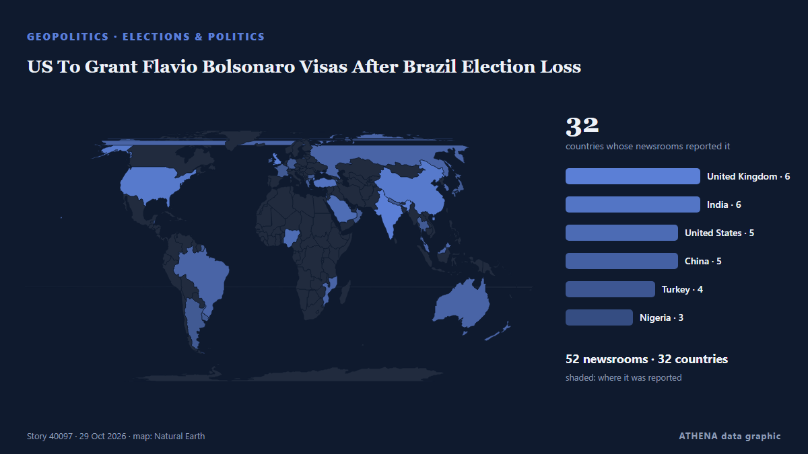

US To Grant Flavio Bolsonaro Visas After Brazil Election Loss

Brother Eduardo welcomes him in Miami, Brazilian media reports, as US confirms visas for Bolsonaro and his family. από Anadolu Agency (English)
Αναφέρθηκε ανεξάρτητα από 51 μέσα σε 32 χώρες από τις 27 Οκτ, πρώτο το Anadolu Agency (English)· η κάλυψη έχει ηρεμήσει. Το ATHENA εκτιμά τον κίνδυνο χαμηλό (1.0/10), κυρίως λόγω της εμβέλειάς του και της τεκμηρίωσης. Βεβαιότητα 89% (υψηλή): το επιβεβαιώνουν 51 ανεξάρτητα μέσα, μέση αξιοπιστία 76%. Μέσα ανά χώρα: Ηνωμένο Βασίλειο (4), Ηνωμένες Πολιτείες (4), Ινδία (4). Κάλυψη: 27 Οκτ έως 28 Οκτ, 9 ώρες.
Γιατί έχει σημασία: Οι εξελίξεις στην ασφάλεια και τη διπλωματία μπορούν να μετατοπίσουν συμμαχίες, εμπόριο και αγορές πολύ πέρα από τις χώρες που εμπλέκονται.
Τι άλλαξε: 11 νέες αναφορές από 11 μέσα στο 24ωρο έως 29 Οκτ.
Πρώτη διατύπωση: U.S. to grant visas to Flavio Bolsonaro and his family after Brazil election loss
Οι τίτλοι των ειδήσεων παρουσιάζονται στα αγγλικά, όπως δημοσιεύτηκαν.
Με μια ματιά
Επιλέγεται, βαθμολογείται και γράφεται από τη δημοσιευμένη μεθοδολογία του ATHENA. Κανένας συντάκτης δεν παρεμβαίνει σε μεμονωμένα γεγονότα. Πώς παράγεται ›
| 27 Oct 21:28 UTC | 19 |
|---|---|
| 27 Oct 23:28 UTC | 5 |
| 28 Oct 01:28 UTC | 5 |
| 28 Oct 03:28 UTC | 7 |
| 28 Oct 05:28 UTC | 9 |
| 28 Oct 07:28 UTC | 6 |
| 28 Oct 09:28 UTC | 0 |
| 28 Oct 11:28 UTC | 0 |
| 28 Oct 13:28 UTC | 2 |
| 28 Oct 15:28 UTC | 3 |
| 28 Oct 17:28 UTC | 0 |
| 28 Oct 19:28 UTC | 0 |
| 28 Oct 21:28 UTC | 2 |
| 28 Oct 23:28 UTC | 1 |
| 29 Oct 01:28 UTC | 1 |
| 29 Oct 03:28 UTC | 0 |
| 29 Oct 05:28 UTC | 0 |
| 29 Oct 07:28 UTC | 0 |
| 29 Oct 09:28 UTC | 2 |
| 29 Oct 11:28 UTC | 1 |
| 29 Oct 13:28 UTC | 1 |
| 27 Oct 21:35 UTC | 0.0 |
|---|---|
| 28 Oct 22:13 UTC | 1.8 |
| 28 Oct 22:51 UTC | 0.0 |
| 29 Oct 02:49 UTC | 1.2 |
| 29 Oct 14:58 UTC | 1.0 |
Γιατί αυτοί οι αριθμοί
Σημασία
Κίνδυνος
Βεβαιότητα
Η κάλυψη — ποιος το ανέφερε και πότε
ο τίτλος όπως δημοσιεύτηκε · ανοίγει το πρωτότυπο- Anadolu Agency (English) · ΤουρκίαDefeated Brazilian presidential candidate Flavio Bolsonaro arrives in US despite travel ban: Report
- The Irish News (Belfast) · Ηνωμένο ΒασίλειοDefeated Bolsonaro and family to be granted US visas, official confirms
- Belfast Telegraph · Ηνωμένο ΒασίλειοDefeated Bolsonaro and family to be granted US visas, official confirms
- Sky News (World) · Ηνωμένο ΒασίλειοBolsonaro has fled to Miami after losing Brazilian election - report
- CBS News (World) · Ηνωμένες ΠολιτείεςFlávio Bolsonaro leaves Brazil, lands in U.S. after election loss
- Al Jazeera English · ΚατάρFlavio Bolsonaro flees Brazil after election loss, US says will grant visa
- Indian Express · ΙνδίαBrazil’s Bolsonaro, family to get US visas after election loss: State Department
- CNA (Channel NewsAsia) · ΣιγκαπούρηBrazil's Flavio Bolsonaro flees to US after election loss
- The Rio Times · ΒραζιλίαFlávio Bolsonaro Reported Heading to the US
- Vanguard · ΝιγηρίαBrazil’s Flavio Bolsonaro flees to US after election loss
- DW English · ΓερμανίαFlavio Bolsonaro flees Brazil for US amid investigation
- Anadolu Agency (English) · ΤουρκίαBrazil's Lula calls defeated rival Bolsonaro's reported departure 'shameful'
- NDTV · ΙνδίαUS Says It Will Issue Visas To Brazil's Flavio Bolsonaro After Election Loss
- Türkiye Today · ΤουρκίαUS to issue visas to Flavio Bolsonaro and family as reports say he left Brazil
- PBS NewsHour · Ηνωμένες ΠολιτείεςNews Wrap: U.S. providing visas to Bolsonaro and family after loss in Brazil's election
- Free Malaysia Today · ΜαλαισίαBrazil’s Flavio Bolsonaro flees to US after election loss
- Breaking Belize News · ΜπελίζInternational News: US to issue visas to Flávio Bolsonaro and family after election defeat
- Punch · ΝιγηρίαBolsonaro heads to US after Brazil presidential election defeat — Reports
- Times of India · ΙνδίαFlavio Bolsonaro flees Brazil after Lula defeat, US offers visas to family
- Stuff · Νέα ΖηλανδίαBrazil's Flávio Bolsonaro and family ‘will get US visas after election loss’
- SBS News · ΑυστραλίαBrazil told Flávio Bolsonaro he couldn't leave the country. He did it anyway
- The Korea Times · Νότια ΚορέαBrazil's Flavio Bolsonaro flees to US after election loss
- Xinhua (English) — page reader · ΚίναLula calls Flavio Bolsonaro's departure from Brazil "shameful"
- NDTV · ΙνδίαFlavio Bolsonaro Flees To US After Losing Brazil Election
- Xinhua (English) — page reader · ΚίναU.S. to grant visas to Flavio Bolsonaro and his family after Brazil election loss
- Oman Observer · ΟμάνBrazil's Flavio Bolsonaro flees to US after election loss
- NPR · Ηνωμένες ΠολιτείεςFlávio Bolsonaro arrives in Florida after fleeing Brazil
- ABC News Australia · ΑυστραλίαAfter election loss, Bolsonaro vanished. Days later he surfaced in the US
- The Intercept · Ηνωμένες ΠολιτείεςThe Bolsonaro Family Playbook: Lose, Cry Fraud, and Run to Trump’s America
- Free Malaysia Today · ΜαλαισίαUS to grant Bolsonaro visa as he flees Brazil after election loss
- The Independent · Ηνωμένο ΒασίλειοTrump calls Bolsonaro family ‘fine people’ as defeated Brazil candidate flees to US
- MercoPress · ΟυρουγουάηFlávio Bolsonaro leaves Brazil despite a court ban and the US will grant him a visa
- NEWS.am (English) · ΑρμενίαCNN: Ex-presidential candidate Flavio Bolsonaro, who fled Brazil, arrives in US
- TASS (English) · ΡωσίαBolsonaro arrives in Miami with family after fleeing Brazil
- Mainichi (English) · ΙαπωνίαBrazil's Flavio Bolsonaro and family will get US visas after election loss, State Department says
- The Jerusalem Post · ΙσραήλFlavio Bolsonaro and family to receive US visas after leaving Brazil, State Department says
- The Kathmandu Post · ΝεπάλFlavio Bolsonaro and family to receive US visas after leaving Brazil, State Department says
- Club of Mozambique · ΜοζαμβίκηUS to grant Flavio Bolsonaro visa as he flees Brazil after election loss
- Cyprus Mail · ΚύπροςBolsonaro leaves Brazil for US after losing to Lula
- The Straits Times · ΣιγκαπούρηTrump says he approves of Brazil’s Flavio Bolsonaro coming to US